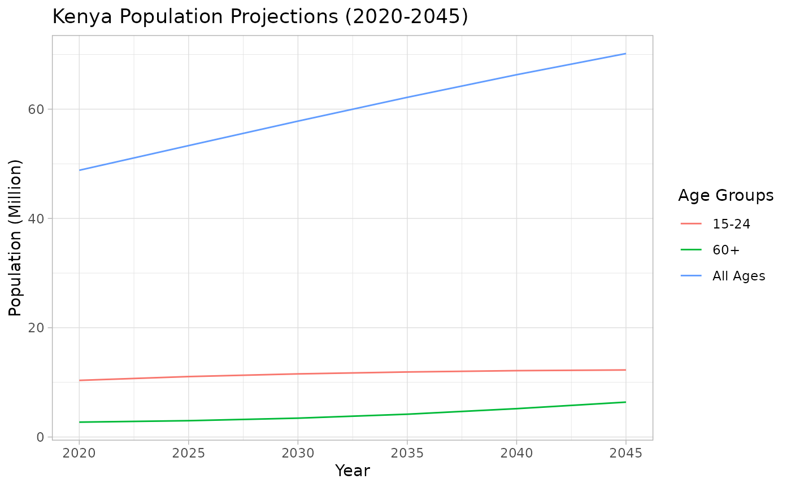

How Population Projections Are Done
Source:vignettes/articles/population-projection.Rmd
population-projection.RmdIntroduction to Population Projections
Population projections are vital tools used to estimate future population sizes and compositions. These estimates help governments and organizations plan for infrastructure, healthcare, education, and other public services. The projections are based on current demographic trends such as birth rates, death rates, and migration patterns.
This guide explains how population projections are done using the methods applied by the Kenya National Bureau of Statistics (KNBS), with an emphasis on cohort-component methods.
Key Inputs for Population Projections
Population projections require several key demographic inputs:
- Base Population: The population data from the most recent census, which serves as the starting point.
- Fertility Rates: The number of births per woman within a certain age group.
- Mortality Rates: The death rates by age and sex.
- Migration: The movement of people in and out of the country (although Kenya’s projections often assume zero net migration).
Population Projection Formula
The most common approach to projecting populations is the cohort-component method, which projects the population forward by age and sex cohorts. The formula for each cohort is as follows:
Where:
- is the projected population at time .
- is the current population at time .
- is the number of births during the period.
- is the number of deaths during the period.
- is the net migration during the period (for Kenya, this is often assumed to be zero).
Example: Kenya’s Population Projections 2020-2045
Using the cohort-component method, the KNBS has projected the following changes in Kenya’s population from 2020 to 2045:
- The total population is expected to grow from 48.8 million in 2020 to 70.2 million in 2045.
- The youth population (aged 15-24) is projected to grow from 10.4 million in 2020 to 12.3 million by 2045.
- The number of older adults (aged 60 and above) is expected to increase dramatically from 2.7 million to 6.4 million by 2045.
The chart below shows the projected total population in 5-year intervals:

Conclusion
Population projections are essential for strategic planning and resource allocation. By projecting population growth and changes in demographics, governments and organizations can better prepare for the future. The methodology employed by KNBS, based on demographic data and the cohort-component method, provides a robust framework for making informed predictions about Kenya’s population in the coming decades.